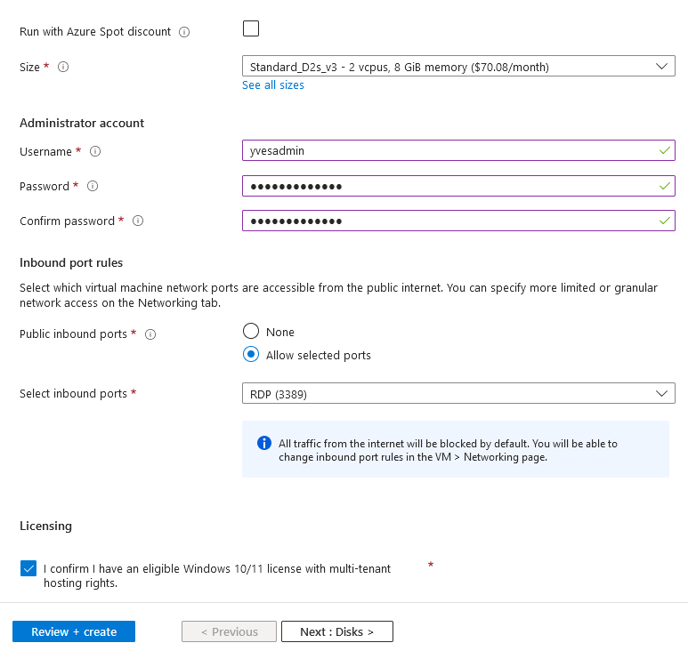

Steps:
1) I created an Azure Subscription ( https://azure.microsoft.com/en-us/free/ ) using my student email worth of $100 credit (No credit card information was required). Remember to delete the resources groups after completing the lab to avoid consuming your sub cost.
2) On Azure Portal, I navigated Resource groups. To create a new resource group that would accommodate all the resources (Virtual Machine, Logs Analytics Workspace, and Microsoft Sentinel), I needed to provide the following details: Azure subscription, the new resource group name, and the Azure Location. During this step, I became aware that the chosen location impacts Azure Cloud costs. Once I had entered the required information, I proceeded by clicking the "Review + Create" button, followed by the "Create" button.
3) With the Resource Group in place, I proceeded to create a virtual machine. I initiated this process by searching for "virtual machine" in the search bar of the Azure portal. Afterward, I completed the necessary fields, providing a name for the virtual machine, selecting a region, choosing an image, and specifying a username and password for authentication and VM login. Once I confirmed the remaining default settings, I proceeded by clicking the "Review + Create" button, followed by the "Create" button.
4) I created a log repository in Azure (called a log analytics workspace which was used to ingest our logs from the VM).
5) Moving forward, I proceeded to deploy Microsoft Sentinel, which is essential for collecting and ingesting data from our VM. Within the Azure portal's search bar, I located and selected "Microsoft Sentinel," followed by clicking on "Add." I opted to use my existing Log Analytics Workspace. Afterward, I reviewed the configuration and clicked the "Review + Create" button before finalizing by clicking "Create." Once the deployment concluded, I navigated to the "Overview" section in the left pane. This presented a graphical representation of real-time events and incidents.

6) During the VM creation process, a default setting was utilized that included the selection of RDP ports (3389) under Inbound port rules. This configuration allowed RDP traffic from any source to any destination, thereby rendering our VM discoverable. From a security perspective, this left our VM vulnerable to potential attacks from around the globe. I took measures to mitigate such risks. Specifically, I implemented a security feature known as "Just in Time" access.
7. The subsequent step in my journey involved harnessing data connectors and establishing a data collection rule to ingest information from our VM. To facilitate the importation of data from the VM into Microsoft Sentinel, I followed these steps:
7) Upon the successful completion of the data collection rule, it became evident that Windows Security Events via AMA had become integrated with the Microsoft Sentinel Instance. This was clearly observable by clicking on the "Incidents" option in the left pane.
8) My next task was to forward Windows security events directly in real time from the logs to Microsoft Sentinel and my Log Analytics Workspace. Logged in to the VM via RDP, authenticated with Username and Password I created at the beginning of this project. Once within the VM, I navigated to Event Viewer where I could effectively to observe events from standard logs, such as System, Security, Setup, Forwarded Events. I clicked on Security and I can see all the security events on the VM. One way to check if we had successfully logged on was to take a look at event 4624.
9) Within an enterprise setting, the main goal of a SIEM such as Microsoft Sentinel is to collect data from all endpoints and virtual machines, streamlining the process for analysts to access required information in real-time thus investigate log data for incident response to cyberattacks and data breaches. As I was progressing in this project, here I used KQL (Kusto Query Language) to write queries that will help fetch, filter, analyze, and visualize data. From Azure Sentinel portal, I clicked on the left pane Logs, in the Query window I entered the following custom Query
which displayed a list of all the times we have had a successful login on our VM.
10) Building upon the preceding steps, we successfully established a connection between our VM and Microsoft Sentinel, the objective was to generate custom rules capable of searching for specific criteria throughout the environment. These rules would trigger incidents whenever the predefined criteria were met, thereby enhancing our ability to detect potential threats and facilitate subsequent investigation.